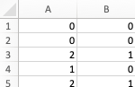

Label Studio
Label Studio is a free/open source tool aimed at data annotation, i.e., humans making observations on data. It is highly flexible: images, audio and text data can be annotated with it. In this brief tutorial we focus on the most simple type of annotation work and ask coders to choose the most suitable category for a piece of text.
Installation
Closed-coding task is a collaborative task: all coders must access the same data and use exactly the same codes for this. Label Studio makes this easy: it is an web-based app coders can access with their web browsers. However, this requires the system to be installed on a web server.
Finnish universities have access to computing resources, including web servers via CSC. These services are available without additional charge.
Setting up user account to CSC
- Login to my.csc.fi with your Haka user account. This will create a CSC user account for you.
- Login to rahti.csc.fi wuth your newly created CSC user account.
Setting up a web service project
- On Rahti management interface, create a new project with a unique name (such as
username-labelstudio) and display name of your choice (for exampleLabelStudio) and a brief description (LabelStudio for course Qualitative Research and Computers) and click Create. - Move to the project page of the just created project.
- On storage page, create a new storage called
datawith 1 Gib of memory, click Create. - On dashboard page, choose to deploy image with the image name
heartexlabs/label-studio:latest - Once created, edit the deployment and add environment values, finally save
HOMEvalue of/tmp/DATABASE_NAMEvalue of/data/database.sqlite3LABEL_STUDIO_BASE_DATA_DIRvalue of/data
- From configurations, add storage to the project and mount it to
/data - Wait a few minutes
- From the dashboard click Add Route and Create a new route (all settings are OK).
- The site now shows a new link where your freshly installed Label Studio is.
Setting up Label Studio
- Create an user account on Label Studio instance
- Once logged in, create a new project
- Give the project a name and description
Data import
Data may contain both entries to be classified and metadata, such as origins or timestamps of entries.
They are formulated into a spreadsheet, where different columns divide the entries.
You can use spreadsheet software, such as Microsoft Excel, to produce the file, but you must save the data as a .csv file.
In case that there is no metadata involved, entries can also be on a text file (.txt, not .docx), where each unit is on its own line.
Codebook setup
Under the menu "Labelling setup", there are several templates pre-made for content labelling. We focus on text classification, so choose from the templates "Natural Language Processing" and from there, "Text Classification". (To get an idea of the versatility of Label Studio, you should check out all the templates.)
The template customisation user interface allows you to define the codebook, that is, the alternatives from which the coder must choose the code from. New choises can be entered by typing them to the "Add choice" text box and adding them, and codes can be removed by clicking the grey X on the right side of alternatives. Note that the choice can be longer than one word, even to the degree of sentences or short paragraph. You can see the coding interface on right side Preview panel.
Label Studio does allow customisation of the labelling interface beyond these templates using its own markup language.
Coding content on Label Studio
On the project dashboard, press the blue "Label All Tasks" button to start coding. You will be automatically directed to the coding user interface you have customised and imported data is shown unit by unit.
By default, Label Studio is open to internet
On current setup anyone on the internet is able to create new user account as well. If you use label studio for research purposes, limit this by adding following environment variables during project setup (we left them out as that stage is already cumbersome). (For details, see user guide.)
LABEL_STUDIO_DISABLE_SIGNUP_WITHOUT_LINK=true
LABEL_STUDIO_USERNAME=<username>
LABEL_STUDIO_PASSWORD=<password>
Even after limiting access to Label Studio, bear in mind that every user on Label Studio has access to all data and projects on the server. This is due to their business model, where more extensive securing of the system is for paying enterprise customers only.
Inviting new coders for the project.
With closed coding approach, academic researchers want have several coders to code each unit. This way, it is possible assess intercoder reliability and evaluate the objectivity (i.e., agreement) between codes. As we are using a non-enterprise version of Label Studio, there is no easy way to increase the minimum number of labels per project, it is automatically set as one.
To overcome this technical limitations, setup a separate project for each coder. Follow steps described above to create new projects.
New coders can create an user account to your label studio and access all projects through the interface. Just share them the link to your instance.
Info
It is also possible manually to enter several codes per unit on Label Studio. Open each entry separately and by choosing the user name of the person, you may click "Create Annotation" -- but as you would need to do this manually for each unit, it is highly cumbersome.
Assessing intercoder reliability
To assess the intercoder reliability, export the coded data from all projects (i.e., the project you coded and the project your partner coded). Use the CSV format and open them.
Check that both spreadsheets are in the same order, i.e., units (rows) are the same. (These sheets contain the IDs, which allows you to order them.) Create a new spreadsheet where you copy assigned codes for each unit, so that each coder has their own column. Find and replace data so that codes are transformed into numeric values. The final outcome looks like this:

Use software such as ReCal2 to calculate the intercoder reliability score for the coded data from this new spreadsheet. Remember to code the data per requirements of the software, for ReCal2 remove all headers and the column containing data so that only codes (as numbers) for all coders remain on the spreadsheet.